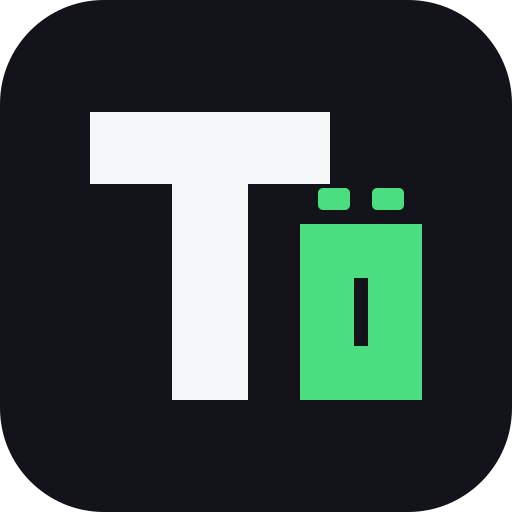
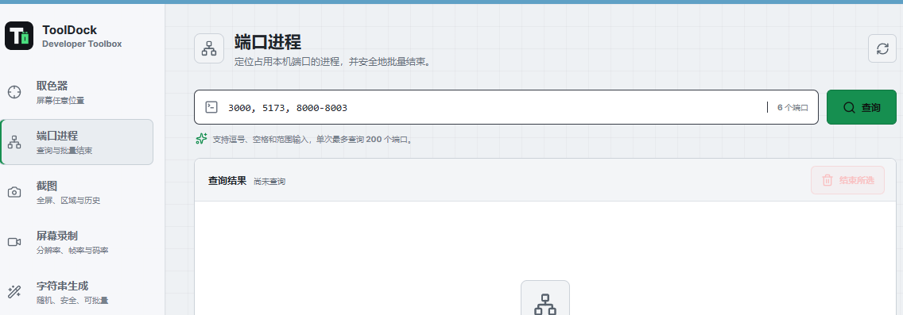
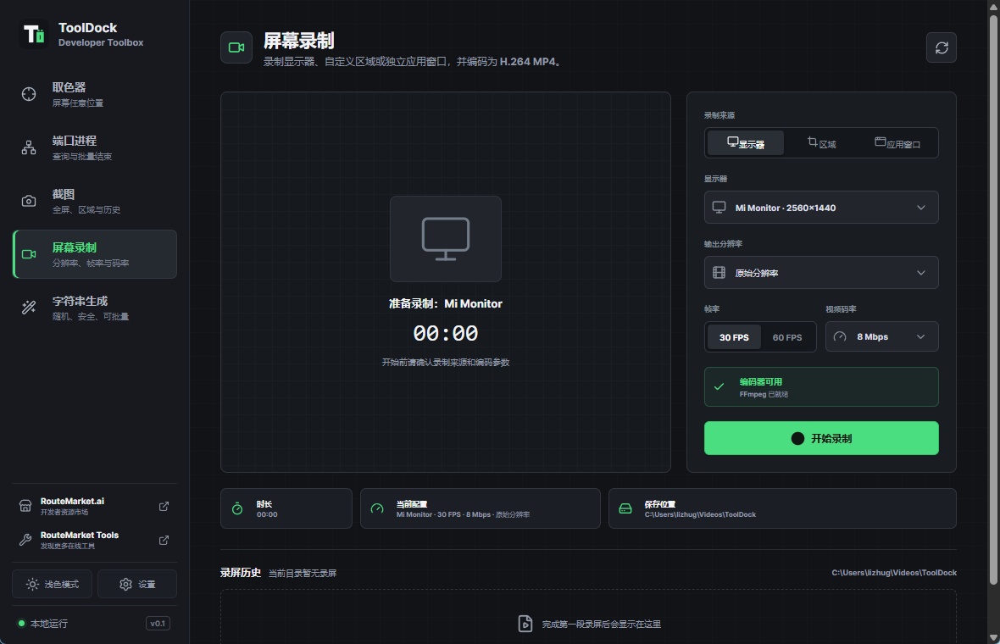

Screen color picker
Pick across displays with an overlay and magnifier, then copy HEX and RGB instantly.

ToolDockDeveloper desktop toolbox
Keep the small utilities that interrupt development in one fast, local, cross-platform workspace.
Stay in flow
ToolDock brings screen, process, and text utilities together without sending your data through a browser service.
One dock, daily tools
Pick across displays with an overlay and magnifier, then copy HEX and RGB instantly.
Find the process behind one port or a range, then terminate selected entries in one action.
Capture a display or a selected region, copy it to the clipboard, and revisit local history.
Record a display, region, or app window with live preview, quality controls, and optional audio.
Generate UUIDs, HEX values, passwords, and custom-length random strings in batches.
Designed for momentum
Global shortcuts open color picking, region capture, and recording. ToolDock can stay in the system tray while histories and preferences remain ready for the next task.
Use configurable global shortcuts or the compact sidebar.
Select the active display, region, or application window.
Copy immediately or return to local screenshot and recording history.
The actual app
A quiet interface made for repeated actions, with larger text, configurable fonts, and Chinese, English, Japanese, and Korean.


Open-source desktop app
Release assets are published on GitHub. Choose the package for your operating system and follow the platform installer.
Use the NSIS installer or MSI package from the latest release.
View downloads →Download the DMG for your Mac architecture from the latest release.
View downloads →Choose an AppImage or distribution package from the latest release.
View downloads →Install FFmpeg or set TOOLDOCK_FFMPEG to enable H.264 MP4 recording and audio input detection.
Open source and local first
ToolDock is released under the MIT License. Inspect the source, build it yourself, and adapt it to your workflow.